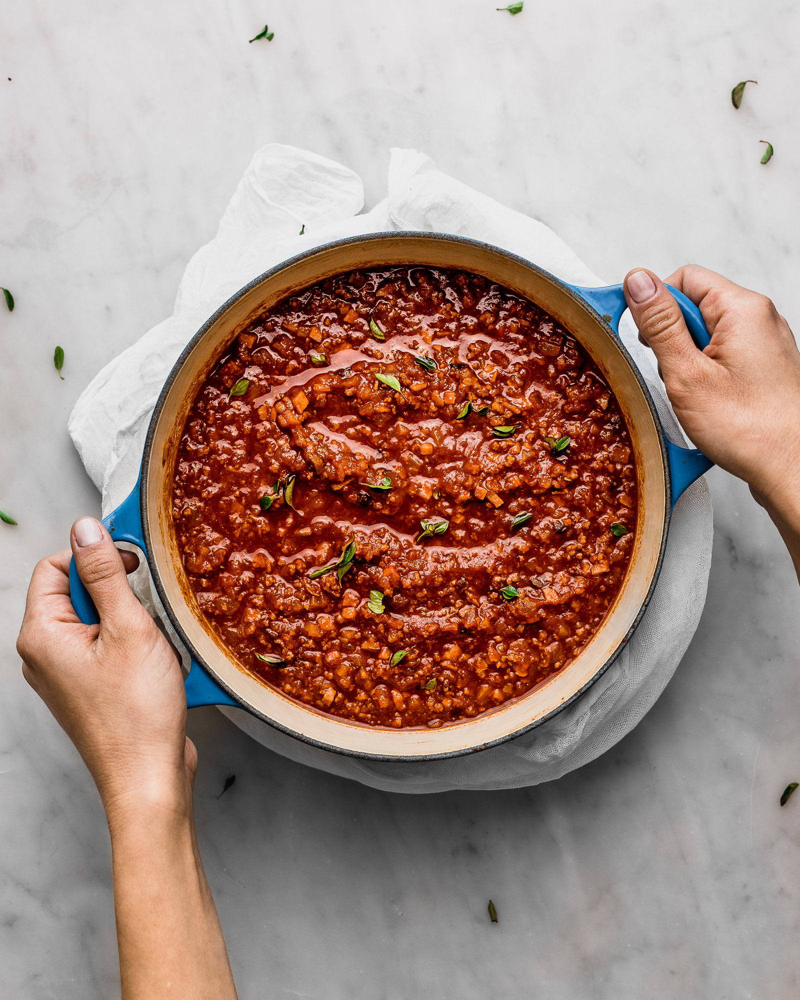

How to Make Bolognese Sauce

Description
This Bolognese sauce recipe is a classic Italian sauce that's hearty,
rich, and full of flavor. Made with ground beef, vegetables, and a variety
of spices and seasonings, it's a delicious sauce that's perfect for
serving with pasta.
To make this recipe, you'll first sauté the onion, garlic, carrot, and
celery in olive oil until the vegetables are softened. Then, you'll add
the ground beef and cook it until it's browned and cooked through. Next,
you'll stir in crushed tomatoes, tomato paste, broth, and red wine (if
using), along with oregano, basil, salt, and pepper. Let the sauce simmer
for at least an hour, stirring occasionally to allow the flavors to
develop.
The end result is a thick and savory sauce that's perfect for serving over
your favorite pasta. Whether you're making spaghetti, fettuccine, or
another type of pasta, this Bolognese sauce is sure to impress. It's a
simple and delicious recipe that's perfect for any night of the week, and
it's a great way to add some Italian flair to your dinner table.
Ingredients
- 1 pound (450 grams) ground beef
- 1 tablespoon olive oil
- 1 onion, finely chopped
- 2 cloves garlic, minced
- 1 carrot, finely chopped
- 1 celery stalk, finely chopped
- 1 can (14 ounces/400 grams) crushed tomatoes
- 1/4 cup tomato paste
- 1/2 cup beef or vegetable broth
- 1/2 cup red wine (optional)
- 1 teaspoon dried oregano
- 1 teaspoon dried basil
- Salt and pepper to taste
Instructions
-
Heat the olive oil in a large saucepan over medium heat. Add the onion,
garlic, carrot, and celery. Sauté for about 5 minutes until the
vegetables are softened.
-
Add the ground beef to the pan and cook, breaking it up with a spoon,
until it's browned and cooked through.
-
Stir in the crushed tomatoes, tomato paste, beef or vegetable broth, and
red wine (if using). Season with oregano, basil, salt, and pepper. Bring
the sauce to a simmer.
-
Reduce the heat to low and let the sauce cook uncovered for at least 1
hour, stirring occasionally. If you have more time, you can let it
simmer for up to 3 hours to enhance the flavors.
-
Taste and adjust the seasonings as needed, adding more salt, pepper, or
herbs if desired.
-
Serve the Bolognese sauce over cooked pasta of your choice, such as
spaghetti or fettuccine. Top with grated Parmesan cheese, if desired,
and enjoy!